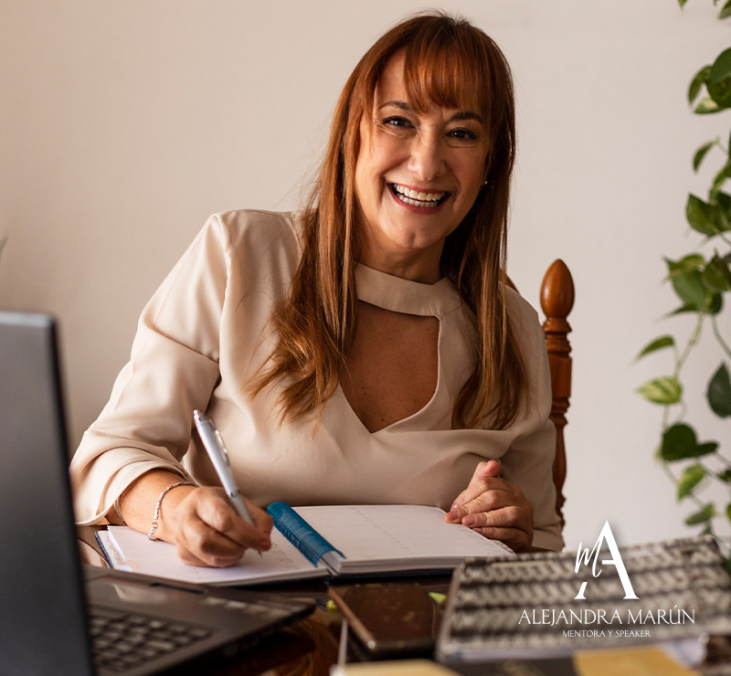
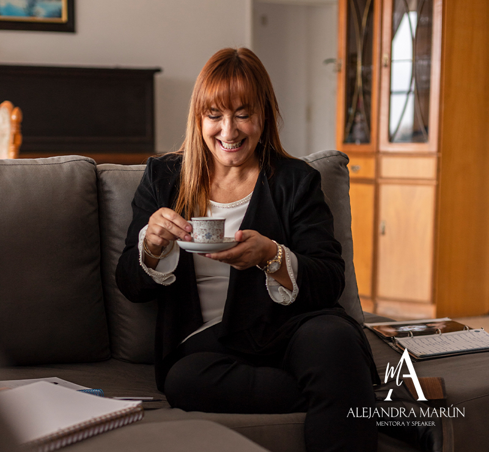

ALEJANDRA MARÚN
En este relato personal, reflexiono sobre mi proceso de transformación y crecimiento. Reconozco que a veces busco recibir lo que no doy, como el perdón. A lo largo del tiempo, he cometido errores y me arrepentí sinceramente. Sin embargo, lidiar con la comprensión y el perdón de otros ha sido un desafío. He aprendido a valorar el proceso de perdón y a no dilatarlo. Mis recomendaciones a mis hijos y seres queridos a veces no se alineaban con mi propia vida. He comprendido la importancia de cuidarme a mí misma y aplicar el lema "porque me quiero, me cuido". He experimentado cambios en mi vida, como mudanzas, finalización de relaciones y cambio de empleo. Algunos cambios fueron difíciles y requerían tiempo y preparación. A lo largo de esta transformación, tuve un mentor que me guió y reflejó mis pendientes y sueños. Aunque enfrento dificultades para dejar mi zona de confort, he aprendido a premiarme y valorarme más. Reconozco que los premios internos son esenciales para el crecimiento emocional. Me esfuerzo por otorgarme cariño y reconocimiento en mi camino de cambios. He aprendido a desaprender hábitos automáticos y estar más consciente de oportunidades. Establezco armonía entre mi tiempo personal y laboral, aprendiendo a delegar y comunicarme efectivamente. Aunque enfrenté inseguridades y autocrítica, ahora aspiro a ayudar a otros. Ofrezco herramientas personalizadas para planificar proyectos de vida, con enfoque comercial, emprendedor o familiar. La gestión de emociones es crucial. Valoro resignificar errores como oportunidades de aprendizaje. Quiero ser mentora y compartir lo aprendido. Creo en la capacidad de transformar emociones negativas en valiosas oportunidades de crecimiento. Mi objetivo es guiar hacia una vida plena y significativa, brindando apoyo incondicional para alcanzar la felicidad y el bienestar merecidos. Juntos, transformaremos emociones en oportunidades para crecer y brillar.


MI PREPARACIÓN
A lo largo de mi formación académica, he visto cómo mis estudios han nutrido y fortalecido aspectos inherentes en mí, como mi sensibilidad, pasión y el deseo constante de adquirir más conocimiento, especialmente al impulsar mi creatividad. He integrado aprendizajes tanto de la vida como de la amplia gama de recursos que nos brinda el mundo digital. Los libros siempre han sido una parte natural de mi vida, tan esenciales como beber agua, y esto ha ayudado a construir mis hábitos, alimentando mi insaciable curiosidad y mi profunda necesidad de ayudar a los demás.
Mi carrera en la música, que he ejercido durante años, ha intensificado mi sensibilidad, agudizando mis sentidos y llenando mi existencia de perspectivas subjetivas, como percepciones, señales y fe. He aprendido a valorar la maravilla de la diversidad y lo heterogéneo, contribuyendo así a mi formación, logros y acciones.
En mi experiencia como educador, he hallado el equilibrio perfecto entre lo pedagógico y lo didáctico, nutriéndome de empatía para enfrentar los variados desafíos de llegar a cada individuo, conectando con su esencia y sus instintos de superación y supervivencia. Promuevo un respeto profundo por las diversas interacciones en las relaciones humanas.
Como Productor Asesor de Seguros, siento que mi contribución es especialmente valiosa cuando las personas están en situaciones de estrés o vulnerabilidad debido a un accidente. Cada vez más, comprendo que ofrecer las palabras adecuadas en el momento oportuno no solo resuelve situaciones presentes y futuras, sino que también brinda un apoyo y cuidado fundamentales, una experiencia que perduran en la memoria.
Mi espíritu insaciable siempre busca más, impulsado por un deseo inquebrantable de mejorar, transformar y cambiar lo posible. Para mí, el ideal de un mundo y una vida mejores no es solo un sueño inalcanzable, sino algo alcanzable y viable. A través de mis esfuerzos, me dedico a contribuir a esta visión y promover el bienestar y la mejora en todo lo que alcance.
Y así llegó mi camino:
convertirme en mentora. Una combinación de casualidades, investigaciones y participaciones me llevó a ser propuesta como mentora para colegas Productoras Asesoras de Seguros. A partir de ahí, el efecto dominó comenzó y empecé a asesorar a Empresas Familiares, Emprendedores y PYMES.
A través de estas mentorías, descubrí de manera innegable y casi sin darme cuenta el mundo de las "mentorías motivacionales". Esta faceta comenzó a ocupar cada vez más tiempo en mi vida, al punto de hacer que mi otra profesión fuera delegada progresivamente. Esto me llenó de felicidad y placer desde lo más profundo de mi ser. En ese proceso, finalmente entendí completamente la frase que había escuchado tantas veces: "ayudando a otros, me ayudaba a mí misma".
Las mentorías motivacionales encapsulan lo desafiante y mágico de los encuentros donde la conexión alimenta la creatividad y el pensamiento. A través de esta experiencia, se elabora un plan de acción con estrategias para lograr el éxito de manera secuencial a corto, mediano y largo plazo. Estas estrategias se entrelazan armónicamente, considerando viabilidades en recursos, redes, estrategias comunicativas y evaluación.
El resultado de este proceso se traduce en la optimización y el impulso para afrontar nuevos desafíos, proyectos y emprendimientos. Porque en la vida, siempre hay nuevos sueños y horizontes por descubrir. La mentoría motivacional se convierte en el combustible que nos impulsa a avanzar, crecer y abrazar nuevas posibilidades con entusiasmo y confianza. Es un camino emocionante y lleno de oportunidades para alcanzar objetivos y trascender límites.¿QUÉ ES LA MENTORÍA?
El Mentoring Motivacional: Potenciando la Inteligencia Emocional y el Rendimiento La Mentoría Motivacional es un espacio que impulsa la Inteligencia Emocional, crucial para enriquecer la vida. Esta perspectiva abarca lo físico, emocional, energético y mental, influyendo en ámbitos como lo familiar, social y laboral. El mentoring guía en momentos de cambio y metas, buscando bienestar y productividad. Reconocer el valor de las emociones es esencial. Las emociones experimentan fluctuaciones a lo largo de la vida, impactando actitudes y resultados. En momentos de obstáculos, las emociones pueden ser abrumadoras, destacando su poder en la formación de la realidad. Aunque se subestiman en la educación formal, abordar las emociones es fundamental. Como mentora, ofrezco apoyo empático y soluciones. Entreno en armonización emocional, fomentando confianza, exploración de habilidades y visión de posibilidades cercanas. Proporciono herramientas y apoyo para alcanzar el máximo potencial y tomar decisiones acertadas. El Mentoring Motivacional es un camino para recomenzar, reinventarse y lograr objetivos con claridad. Juntos, trazaremos un plan con metas específicas, persiguiendo lo óptimo más que lo suficiente.
FORMATOS DE MENTORÍAS
En circunstancias adversas, trabajar por y para la concreción de nuestros sueños, es lo que le da sentido a nuestra vida.
María Alejandra MarúnEL MENTORING PARA DAR SOPORTE A EMPRENDEDORES
La creatividad, el deseo de superación y crecimiento me llevaron a emprender. Tras cometer errores, logré fusionar el Poder, el Saber y el Querer. En mis Mentorías, destaco estas palabras como leit-motiv. Solo querer no basta, ni tener conocimiento o habilidades. Incluso el Poder no es suficiente: se necesita cabeza y corazón. A veces, el éxito trae frustración e incertidumbre. Cada emprendimiento es único. Mi Mentoring aborda todas las etapas, desde la idea hasta la internacionalización. Ofrezco apoyo financiero, análisis de mercado y estrategias innovadoras a corto y largo plazo. Buscamos un valor diferencial que mejore resultados y se ajuste a las necesidades cambiantes. Comenzamos con un diagnóstico y lo repetimos en momentos clave. Mi intervención guía el proceso y ajusta el itinerario según la evolución. Promuevo nuevas competencias en equipos y líderes, cuidando el clima laboral y comprometiéndome con los desafíos. Como Mentora, vivo el espíritu emprendedor.
EL MENTORING PARA
EMPRESAS Y PYMES
El Mentoring Empresarial es una práctica cada vez más común en empresas de todas dimensiones y sectores. Estos programas sirven para diversas metas como respaldar nuevos modelos de negocio, aumentar la eficiencia, desarrollar habilidades profesionales y comprender mejor la cultura corporativa. También impulsan el trabajo en equipo, rescatan talentos, mejoran la productividad y alinean indicadores con objetivos. Hoy, el Mentoring Empresarial es esencial para el crecimiento profesional y personal de líderes. Requiere constante enseñanza y superación de desafíos, tanto en lo profesional como personal. No hay una fórmula única para estos programas, ya que deben adaptarse a las necesidades de cada organización, maximizando recursos y garantizando resultados. El proceso implica confidencialidad y un código ético para el mentor. Puede aplicarse a empresarios y empleados, con reglas preestablecidas y un acuerdo de confidencialidad. Ambas partes definen expectativas y objetivos. El mentor guía y el mentorizado participa activamente para obtener los máximos beneficios. En resumen, el Mentoring Empresarial es un camino efectivo para el éxito organizacional, fomentando el desarrollo y el logro de metas a través de la orientación experta y el compromiso activo.
EL MENTORING PARA
EMPRESAS FAMILIARES
Trabajar con mi hija en los últimos 15 días ha sido un desafío de gran envergadura, tal vez uno de los más complejos que enfrentamos quienes colaboramos con miembros de la familia. Este proceso tiene múltiples facetas que requieren atención cuidadosa para que lo laboral no afecte ni deteriore la relación familiar y vincular. Uno de los acuerdos que mi hija propuso fue no hablar de trabajo fuera del ámbito laboral. Aprender a respetar esta frontera ha sido beneficioso para ambos, especialmente para nuestra relación.

Requería de mi parte resistir la tentación de abordar temas laborales en situaciones personales bajo excusas como el temor a olvidar detalles laborales. Separar momentos personales, familiares y laborales nos permitió entender mejor las implicancias de nuestras acciones. Manejar objetivos cuando se mezclan con sentimientos nos llevó a reconocer temores, desconocimientos e incertidumbres que podían afectar nuestras decisiones. Mi capacidad para minimizar estos márgenes y evitarlos puede ser de ayuda. Por tanto, como Mentora, puedo compartir mi experiencia y conocimiento, respaldados por investigaciones y entrevistas con diversas empresas familiares. A través de un Plan de Prioridades, podemos abordar desafíos como la comunicación, la asignación de roles, la delegación de tareas, la construcción de relaciones de confianza y la gestión de conversaciones difíciles. Enfocaremos aspectos como roles, toma de decisiones, liderazgo, expectativas y relevo generacional. Juntos repensaremos la estrategia empresarial familiar, considerando las perspectivas de cada miembro. Ayudaré a tomar decisiones más acertadas y a mejorar resultados en términos de clima laboral, satisfacción, lealtad, inversiones y ganancias. Mi motivación surge de haber reconstruido mi relación con mi hija a través de pilares sólidos. Quiero ser tu Mentora para evitar situaciones límite, manteniendo un equilibrio entre lo familiar y lo empresarial. Mi desafío es acompañarte y guiarte, pues he comprobado que fortalecer las relaciones potencia tu empresa familiar de manera asombrosa e innegable.
¿Por qué confiar en mí?
"Alejandra es una luchadora incansable de mil batallas, un Ser con la capacidad de reinventarse y transformar su entorno en un ambiente más humano y prolífero. La vida la llevó por diferentes escenarios, los cuales conquistó a partir de su fuerza emprendedora, su tesón y su incansable voluntad. Hoy, con varios años en la actividad aseguradora, es un caso de éxito, de reinversión continua, poniendo como estandarte el asesoramiento y acompañamiento continuo de sus asegurados, superando incluso los desafíos que genera una Empresa Familiar. Sin lugar a dudas es una persona colmada de virtudes y muy generosa a la hora de compartirlas, con fuerte base en el análisis de las conductas humanas, basado en la interpretación y búsqueda de soluciones, un perfil ideal para comenzar a generar experiencias en la mentoría "
Marcelo RambaudiGerente de Sancor, Casa Central Oficinas de Córdoba.
Dejame tu mensaje
y a la brevedad me pondré en contacto con vos.